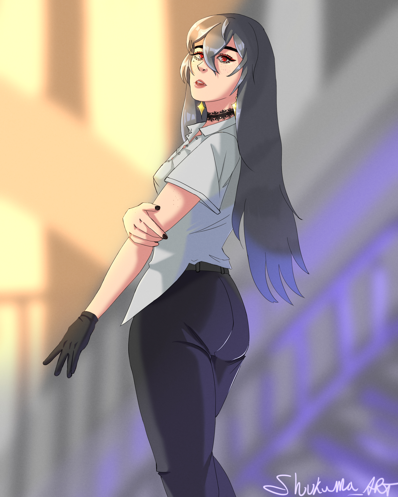
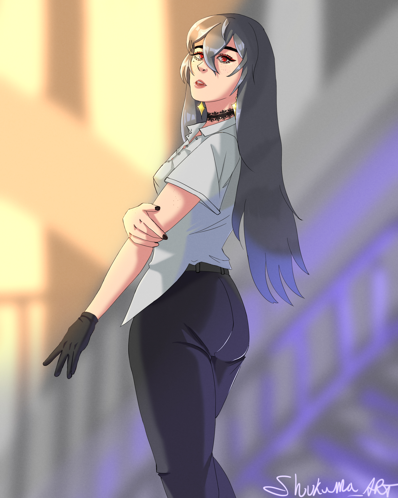

Information
Référence et Processus
Qu'est ce qu'est une référence? La référence est utiliser par la majoriter des artistes, elle est souvent utiliser pour de l'inspiration et les proportions humaines. Il y a plusieurs façons de trouver des références, On peut prendre des photos par nous même ou on peut les trouver sur internet. Je préfère trouver des références sur internet, le site que j'utilise principalement est Instagram, il y a une abondance de photos intéressantes et unique. Ici on peut voir un exemple de référence que j'ai utilisé. Celle-ci est par un photograph Japonais: @K.kai13
Sketch

Base
La première étape avant de commencer de dessiner est toujours d'avoir suffisamment de référence. Ensuite, vien le croquis, une façons libre de dessiner avec peux de sousis, beaucoup des erreures vont être à ce stade ci puisqu'il est facile à manipuler et sans conséquence. Ce processus peut prendre de 15min jusqu'à 1h dépendant de la complexité de l'image. Après le croquis vien ce qu'on appel le "line art", c'est pas une étape que tout le monde utilise mais c'est souvent utiliser dans les styles qui sont inspiré des bandes dessiné ou de manga japonais.
Suite à cela, les couleurs principales, toutes les surfaces vont être couvertes par les couleurs neutre qui sont approprier, par exemple: la peau va souvent être un beige pâle, le cheveux noirs, etc. Après les couleurs de base, j'applique les ombres à tous les endroits qui en ont besoins et en même temps j'applique des touches plus claire pour les endroits qui sont plus en contact avec la lumière. Après cela le processus est presque fini, souvent je vais dessiner un arrière plan très simple ou simplement prendre une image libre de droit dont j'applique un flou. Et finalement, du bruit sera appliquer sur toute l'image en addition de flou.
Statistic
| Création(par semaine) | Fréquence | Likes | Commentaires | Découvertes | Suivit |
|---|---|---|---|---|---|
| Sem1 | 5 | 12 | 3 | 50 | 0 |
| Sem2 | 6 | 15 | 2 | 47 | 0 |
| Sem3 | 4 | 20 | 2 | 58 | 0 |
| Sem4 | 6 | 25 | 4 | 70 | 1 |
Gallérie


 
